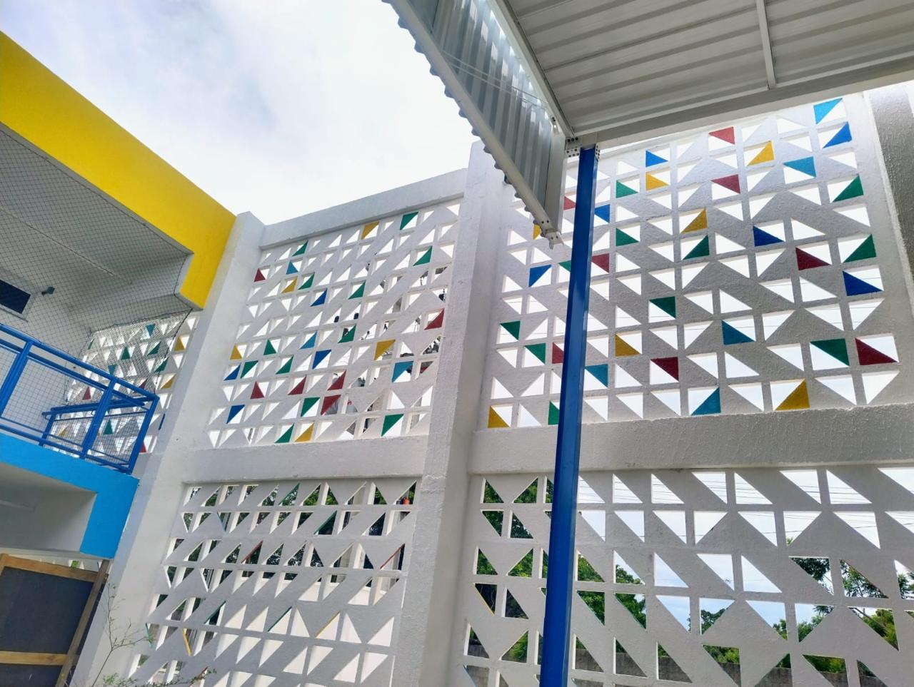

Reformas prediais
Adequações e reformas de espaços comerciais, institucionais e administrativos.
FZ CONSTRUÇÕES LTDA · FORTALEZA, CE
Obras civis, reformas e manutenção predial para empresas e instituições, com organização e responsabilidade técnica.

01 / NOSSO TRABALHO
Registros de obras, reformas e serviços da FZ. Explore as imagens para conhecer de perto o nosso trabalho.
02 / SOLUÇÕES
Da reforma à conservação do imóvel, reunimos serviços para atender às necessidades de cada contrato.
Adequações e reformas de espaços comerciais, institucionais e administrativos.
Serviços preventivos e corretivos para conservar estruturas e instalações.
Pintura interna e externa, emassamento, texturas e acabamentos.
Execução e manutenção de redes hidráulicas e sanitárias.
Infraestrutura, adequações e manutenção de instalações elétricas.
Tubulações de hidrantes, sprinklers e adequações de sistemas.
03 / A FZ CONSTRUÇÕES
Atuamos em obras civis, reformas e manutenção predial para empresas, órgãos públicos e instituições. Nosso compromisso é conduzir cada serviço com organização, segurança e acompanhamento técnico.
Contratos, cronogramas, medições e acompanhamento dos serviços.
Documentação, controle interno e apoio às necessidades da obra.
Equipe dedicada aos serviços, com atenção à segurança, à qualidade e aos prazos.
CLIENTES E PARCEIROS
VAMOS CONVERSAR
Conte o que você precisa. Converse com nossa equipe sobre sua obra, reforma ou manutenção.
Solicitar orçamento pelo WhatsApp ↗